Book of Kells: Chi Rho pageIrish monks · c. 800
found: KellsFol034rChiRhoMonogram
commons · Public domain (Wikimedia Commons) · 1123×1558
book-of-kells-chi-rho-page-monks
low res 1123×1558
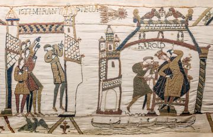
Bayeux Tapestry: Halley's CometAnonymous · c. 1070
found: Bayeux Tapestry 32-33 comet Halley Harold — Myrabella
commons · Public domain (Wikimedia Commons) · 2400×1542
bayeux-tapestry-halley-s-comet-anonymous
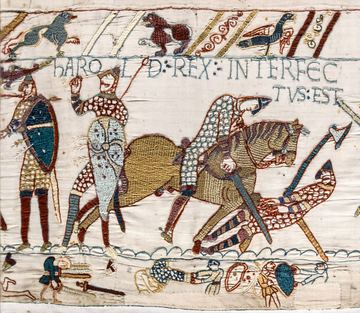
Bayeux Tapestry: the Death of HaroldAnonymous · c. 1070
found: Bayeux Tapestry scene57 Harold death — Myrabella
commons · Public domain (Wikimedia Commons) · 2400×2091
bayeux-tapestry-the-death-of-harold-anonymous
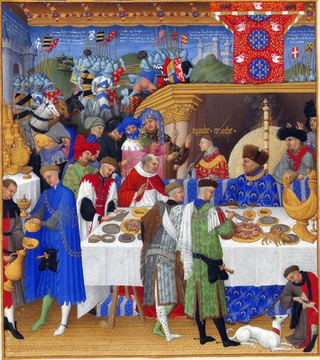
Très Riches Heures: JanuaryLimbourg brothers · c. 1412
found: Les Très Riches Heures du duc de Berry - Janvier — Limbourg brothers
commons · Public domain (Wikimedia Commons) · 1283×1442
tres-riches-heures-january-brothers
low res 1283×1442
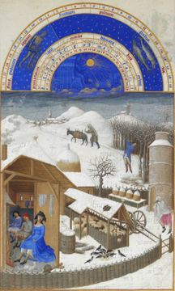
Très Riches Heures: FebruaryLimbourg brothers · c. 1412
found: Très Riches Heures du duc de Berry Folio 2, verso: February — Limbourg brothers
commons · Public domain (Wikimedia Commons) · 1141×1899
tres-riches-heures-february-brothers
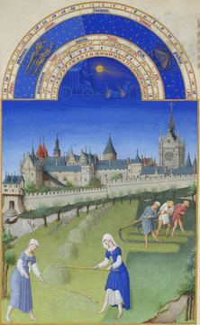
Très Riches Heures: JuneLimbourg brothers · c. 1412
found: Très Riches Heures du duc de Berry Folio 6, verso: June — Limbourg brothers / Barthélemy d'Eyck /
commons · Public domain (Wikimedia Commons) · 1167×1884
tres-riches-heures-june-brothers
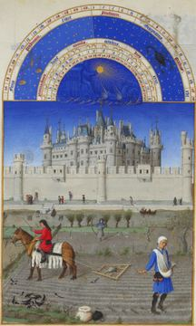
Très Riches Heures: OctoberLimbourg brothers · c. 1412
found: Très Riches Heures du duc de Berry Folio 10, verso: October — Limbourg brothers / Barthélemy d'Eyck
commons · Public domain (Wikimedia Commons) · 1140×1900
tres-riches-heures-october-brothers
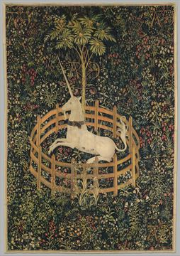
The Unicorn Rests in a GardenUnicorn Tapestries · 1495–1505
found: The Unicorn Rests in a Garden (from the Unicorn Tapestries)
met · CC0 (The Met Open Access) · 1693×2400
the-unicorn-rests-in-a-garden-tapestries
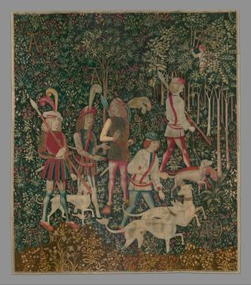
The Hunters Enter the WoodsUnicorn Tapestries · 1495–1505
found: The Hunters Enter the Woods (from the Unicorn Tapestries)
met · CC0 (The Met Open Access) · 2117×2400
the-hunters-enter-the-woods-tapestries
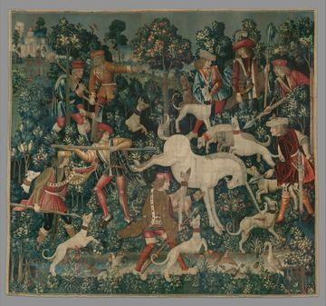
The Unicorn Defends ItselfUnicorn Tapestries · 1495–1505
found: The Unicorn Defends Himself (from the Unicorn Tapestries)
met · CC0 (The Met Open Access) · 2400×2250
the-unicorn-defends-itself-tapestries
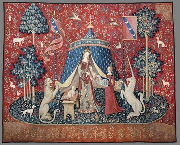
The Lady and the Unicorn: À mon seul désirAnonymous · c. 1500
found: À mon seul désirlabel QS:Lfr,"A mon seul désir, le Sixième sens ou L'Entendement"label QS: — anonymous
commons · Public domain (Wikimedia Commons) · 2400×1938
the-lady-and-the-unicorn-a-mon-seul-desir-anonymous
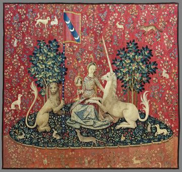
The Lady and the Unicorn: SightAnonymous · c. 1500
found: Sightlabel QS:Lde,"Seesinn"label QS:Len,"Sight"label QS:Lfr,"La Vue"label QS:Lca,"Vista" — anonymous
commons · Public domain (Wikimedia Commons) · 2400×2279
the-lady-and-the-unicorn-sight-anonymous
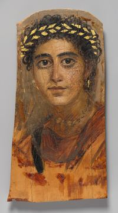
Portrait of a Young Woman in RedFayum portrait · AD 90–120
found: Portrait of a young woman in red
met · CC0 (The Met Open Access) · 1336×2400
portrait-of-a-young-woman-in-red-portrait
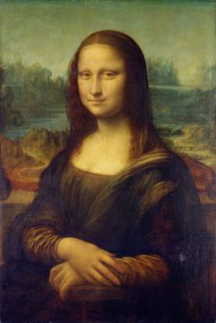
Mona LisaLeonardo da Vinci · c. 1503–19
found: Polish: Mona Lisa Mona Lisatitle QS:P1476,pl:"Mona Lisa "label QS:Lpl,"Mona Lisa "label QS — Leonardo da Vinci
commons · Public domain (Wikimedia Commons) · 1610×2400
mona-lisa-vinci
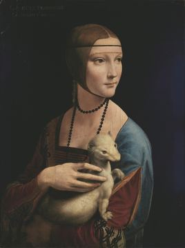
Lady with an ErmineLeonardo da Vinci · 1489–91
found: The Lady with an Ermine (Portrait of Cecilia Gallerani). — Leonardo da Vinci
commons · Public domain (Wikimedia Commons) · 1785×2400
lady-with-an-ermine-vinci
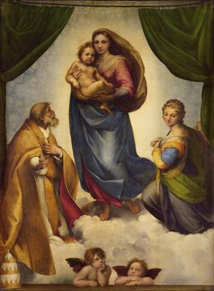
Sistine MadonnaRaphael · 1512
found: German: Sixtinische Madonna Sistine Madonnatitle QS:P1476,de:"Sixtinische Madonna "label Q — Raphael
commons · Public domain (Wikimedia Commons) · 1767×2400
sistine-madonna-raphael
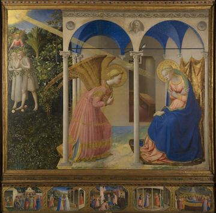
The AnnunciationFra Angelico · 1425–26
found: Polish: Zwiastowanie Annunciationtitle QS:P1476,pl:"Zwiastowanie "label QS:Lpl,"Zwiastowan — Fra Angelico
commons · Public domain (Wikimedia Commons) · 2400×2368
the-annunciation-angelico
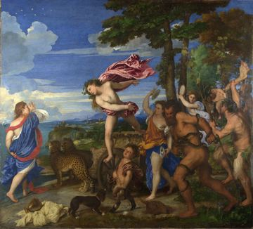
Bacchus and AriadneTitian · 1520–23
found: Bacchus and Ariadne label QS:Les,"Baco y Ariadna" label QS:Lfr,"Bacchus et Ariane" label Q — Titian
commons · Public domain (Wikimedia Commons) · 2400×2172
bacchus-and-ariadne-titian
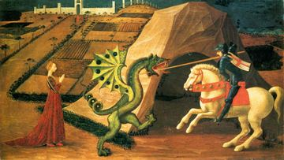
Saint George and the DragonPaolo Uccello · c. 1470
found: St George and the Dragon — Paolo Uccello
commons · Public domain (Wikimedia Commons) · 1250×705
saint-george-and-the-dragon-uccello
low res 1250×705
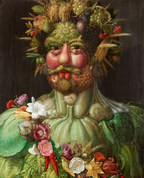
VertumnusGiuseppe Arcimboldo · 1591
found: Italian: L'imperatore Rodolfo II in veste di Vertumno. Rudolf II as Vertumnustitle QS:P147 — Giuseppe Arcimboldo
commons · Public domain (Wikimedia Commons) · 1949×2400
vertumnus-arcimboldo
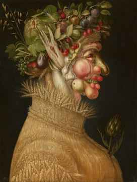
SummerGiuseppe Arcimboldo · 1563
found: German: Sommer The Summerlabel QS:Len,"The Summer"label QS:Lde,"Der Sommer" — Giuseppe Arcimboldo
commons · Public domain (Wikimedia Commons) · 1813×2400
summer-arcimboldo
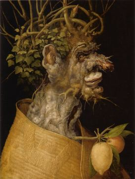
WinterGiuseppe Arcimboldo · 1563
found: German: Winter Allegory of Wintertitle QS:P1476,de:"Winter "label QS:Lde,"Winter "label QS — Giuseppe Arcimboldo
commons · Public domain (Wikimedia Commons) · 1368×1807
winter-arcimboldo
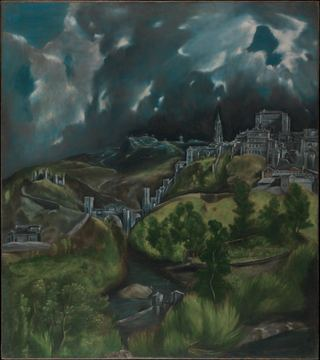
View of ToledoEl Greco · c. 1599
found: View of Toledo — El Greco (Domenikos Theotokopoulos)
met · CC0 (The Met Open Access) · 2133×2400
view-of-toledo-greco
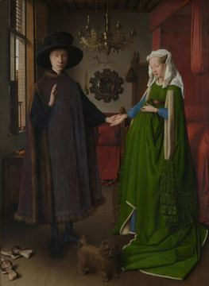
The Arnolfini PortraitJan van Eyck · 1434
found: The Arnolfini Portrait title QS:P1476,en:"The Arnolfini Portrait "label QS:Len,"The Arnolf — Jan van Eyck
commons · Public domain (Wikimedia Commons) · 1754×2400
the-arnolfini-portrait-eyck
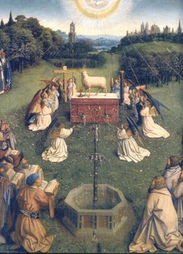
Ghent Altarpiece: Adoration of the Mystic LambHubert & Jan van Eyck · 1432
found: Ghent Altarpiece label QS:Les,"Políptico de Gante (El Políptico de la Adoración del Corder — Jan van Eyck
commons · Public domain (Wikimedia Commons) · 1648×2280
ghent-altarpiece-adoration-of-the-mystic-lamb-eyck
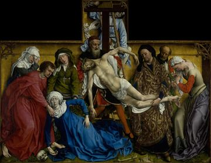
The Descent from the CrossRogier van der Weyden · c. 1435
found: Spanish: El DescendimientoThe Descent from the Crosstitle QS:P1476,es:"El Descendimiento"l — Rogier van der Weyden
commons · Public domain (Wikimedia Commons) · 2400×1862
the-descent-from-the-cross-weyden
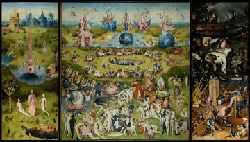
The Garden of Earthly DelightsHieronymus Bosch · c. 1500
found: The Garden of Earthly Delights title QS:P1476,en:"The Garden of Earthly Delights "label QS — Hieronymus Bosch
commons · Public domain (Wikimedia Commons) · 2400×1366
the-garden-of-earthly-delights-bosch
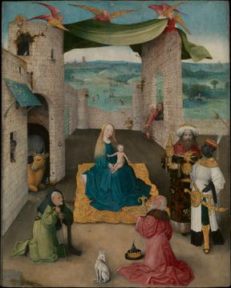
The Adoration of the MagiHieronymus Bosch · c. 1475
found: The Adoration of the Magi — Hieronymus Bosch
met · CC0 (The Met Open Access) · 1921×2400
the-adoration-of-the-magi-bosch
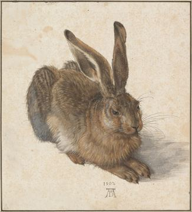
Young HareAlbrecht Dürer · 1502
found: German: Feldhase Young Haretitle QS:P1476,de:"Feldhase "label QS:Lde,"Feldhase "label QS:L — Albrecht Dürer
commons · Public domain (Wikimedia Commons) · 2172×2400
young-hare-durer
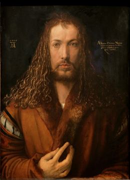
Self-Portrait at 28Albrecht Dürer · 1500
found: German: Selbstbildnis im Pelzrock Self-Portrait with Fur-Trimmed Robetitle QS:P1476,de:"Se — Albrecht Dürer
commons · Public domain (Wikimedia Commons) · 1734×2400
self-portrait-at-28-durer
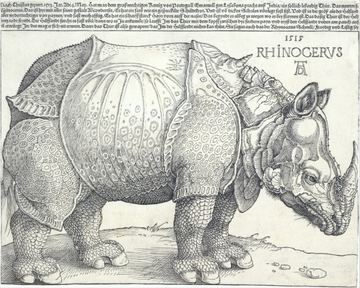
The RhinocerosAlbrecht Dürer · 1515
found: The Rhinoceros — Albrecht Dürer
met · CC0 (The Met Open Access) · 2400×1920
the-rhinoceros-durer
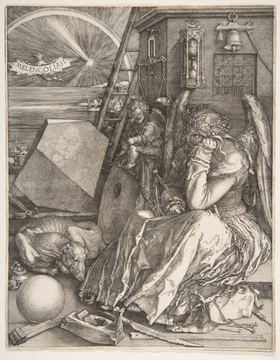
Melencolia IAlbrecht Dürer · 1514
found: Melencolia I — Albrecht Dürer
met · CC0 (The Met Open Access) · 1871×2400
melencolia-i-durer
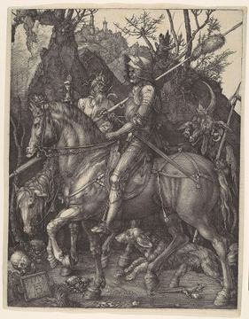
Knight, Death and the DevilAlbrecht Dürer · 1513
found: Knight, Death, and the Devil — Albrecht Dürer
met · CC0 (The Met Open Access) · 1566×2006
knight-death-and-the-devil-durer
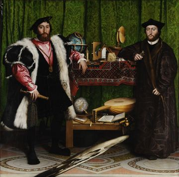
The AmbassadorsHans Holbein the Younger · 1533
found: Spanish: Los Embajadores The Ambassadorstitle QS:P1476,es:"Los Embajadores "label QS:Les," — Hans Holbein the Younger
commons · Public domain (Wikimedia Commons) · 2400×2365
the-ambassadors-younger
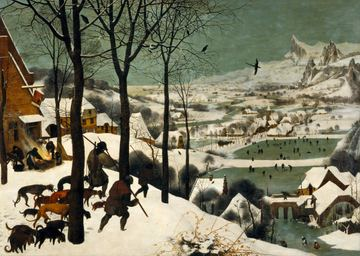
The Hunters in the SnowPieter Bruegel the Elder · 1565
found: Polish: Myśliwi na śniegu monthly cycle, scene: The Hunters in the Snow (winter)label QS:L — Pieter Brueghel the Elder
commons · Public domain (Wikimedia Commons) · 2400×1708
the-hunters-in-the-snow-elder
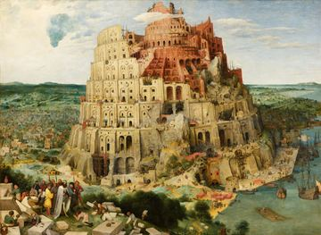
The Tower of BabelPieter Bruegel the Elder · 1563
found: The Tower of Babel — Pieter Brueghel the Elder
commons · Public domain (Wikimedia Commons) · 2400×1756
the-tower-of-babel-elder
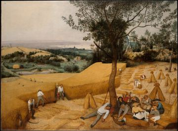
The HarvestersPieter Bruegel the Elder · 1565
found: The Harvesters — Pieter Bruegel the Elder
met · CC0 (The Met Open Access) · 2400×1769
the-harvesters-elder
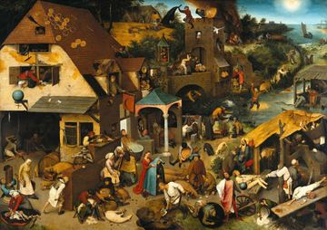
Netherlandish ProverbsPieter Bruegel the Elder · 1559
found: Netherlandish Proverbs (The Blue Cloak) title QS:P1476,en:"Netherlandish Proverbs (The Blu — Pieter Brueghel the Elder
commons · Public domain (Wikimedia Commons) · 2400×1699
netherlandish-proverbs-elder
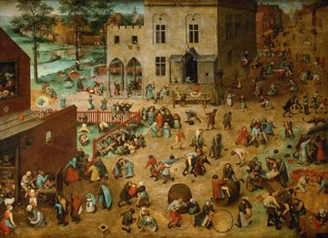
Children's GamesPieter Bruegel the Elder · 1560
found: Children’s Games title QS:P1476,en:"Children’s Games "label QS:Len,"Children’s Games "labe — Pieter Brueghel the Elder
commons · Public domain (Wikimedia Commons) · 2400×1743
children-s-games-elder
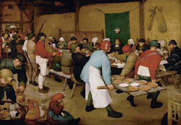
The Peasant WeddingPieter Bruegel the Elder · 1567
found: German: Bauernhochzeit The Peasant Weddingtitle QS:P1476,de:"Bauernhochzeit "label QS:Lde, — Pieter Brueghel the Elder
commons · Public domain (Wikimedia Commons) · 2400×1659
the-peasant-wedding-elder
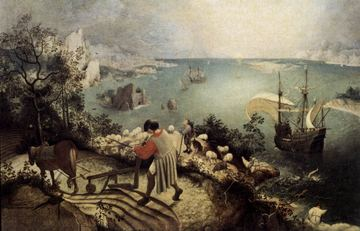
Landscape with the Fall of Icarusafter Pieter Bruegel · c. 1560
found: Landscape with the Fall of Icarus — Pieter Brueghel the Elder
commons · Public domain (Wikimedia Commons) · 1246×800
landscape-with-the-fall-of-icarus-bruegel
low res 1246×800
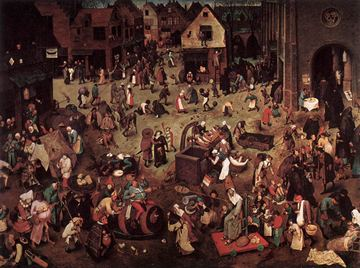
The Fight Between Carnival and LentPieter Bruegel the Elder · 1559
found: Serie der sogenannten bilderbogenartigen Gemälde, Szene: — Pieter Brueghel the Elder
commons · Public domain (Wikimedia Commons) · 1210×900
the-fight-between-carnival-and-lent-elder
low res 1210×900
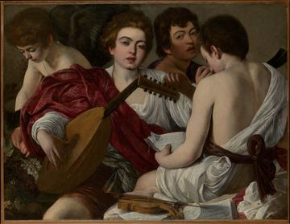
The MusiciansCaravaggio · 1597
found: The Musicians — Caravaggio (Michelangelo Merisi)
met · CC0 (The Met Open Access) · 2400×1863
the-musicians-caravaggio
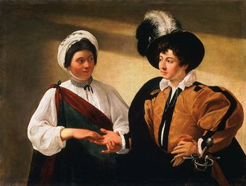
The Fortune TellerCaravaggio · c. 1595
found: The Fortune Teller-Caravaggio (Louvre) — Masur
commons · Public domain (Wikimedia Commons) · 2400×1814
the-fortune-teller-caravaggio
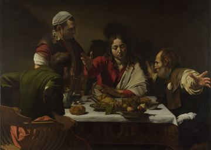
Supper at EmmausCaravaggio · 1601
found: Supper at Emmaus title QS:P1476,en:"Supper at Emmaus "label QS:Len,"Supper at Emmaus "labe — Caravaggio
commons · Public domain (Wikimedia Commons) · 2400×1706
supper-at-emmaus-caravaggio
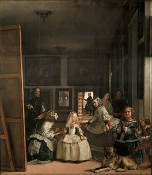
Las MeninasDiego Velázquez · 1656
found: Las Meninas (The Maids of Honor) title QS:P1476,en:"Las Meninas (The Maids of Honor) "labe — Diego Velázquez
commons · Public domain (Wikimedia Commons) · 2085×2400
las-meninas-velazquez
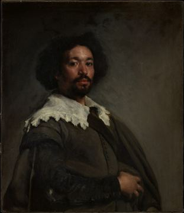
Juan de ParejaDiego Velázquez · 1650
found: Juan de Pareja (ca. 1608–1670) — Velázquez (Diego Rodríguez de Silva y Ve
met · CC0 (The Met Open Access) · 2073×2400
juan-de-pareja-velazquez
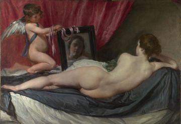
The Rokeby VenusDiego Velázquez · 1647–51
found: Rokeby Venus or The Toilet of Venus label QS:Lit,"Venere Rokeby" label QS:Lfr,"Vénus à son — Diego Velázquez
commons · Public domain (Wikimedia Commons) · 2400×1646
the-rokeby-venus-velazquez
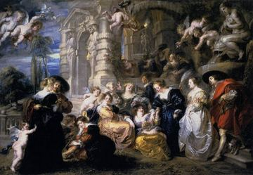
The Garden of LovePeter Paul Rubens · c. 1633
found: The Garden of Love title QS:P1476,en:"The Garden of Love "label QS:Len,"The Garden of Love — Peter Paul Rubens
commons · Public domain (Wikimedia Commons) · 1229×850
the-garden-of-love-rubens
low res 1229×850
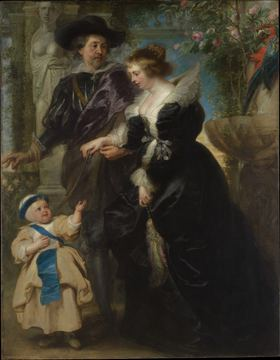
Rubens, Helena Fourment and Their Son FransPeter Paul Rubens · c. 1635
found: Rubens, Helena Fourment (1614–1673), and Their Son Frans (1633–1678) — Peter Paul Rubens
met · CC0 (The Met Open Access) · 1867×2400
rubens-helena-fourment-and-their-son-frans-rubens
Et in Arcadia EgoNicolas Poussin · 1637–38
found: French: Les Bergers d'Arcadie Et in Arcadia egotitle QS:P1476,fr:"Les Bergers d'Arcadie "l — Nicolas Poussin
commons · Public domain (Wikimedia Commons) · 2400×1711
et-in-arcadia-ego-poussin
Seaport with the Embarkation of the Queen of ShebaClaude Lorrain · 1648
found: Seaport with the Embarkation of the Queen of Sheba — Claude Lorrain
commons · Public domain (Wikimedia Commons) · 2400×1824
seaport-with-the-embarkation-of-the-queen-of-sheba-lorrain
The Return of the Prodigal SonRembrandt · c. 1668
found: The Return of the Prodigal Son label QS:Lit,"Ritorno del figliol prodigo" label QS:Lfr,"Le — Rembrandt
commons · Public domain (Wikimedia Commons) · 1839×2400
the-return-of-the-prodigal-son-rembrandt
The Penitent MagdaleneGeorges de La Tour · c. 1640
found: The Penitent Magdalen — Georges de La Tour
met · CC0 (The Met Open Access) · 1768×2400
the-penitent-magdalene-tour
The Night WatchRembrandt · 1642
found: Dutch: Officieren en andere schutters van wijk II in Amsterdam, onder leiding van kapitein — Rembrandt
commons · Public domain (Wikimedia Commons) · 2400×2011
the-night-watch-rembrandt
The Jewish BrideRembrandt · c. 1665
found: The Jewish Bride label QS:Len,"Portrait of a couple as figures from the Old Testament, kno — Rembrandt
commons · Public domain (Wikimedia Commons) · 1236×877
the-jewish-bride-rembrandt
low res 1236×877Aristotle with a Bust of HomerRembrandt · 1653
found: Aristotle with a Bust of Homer — Rembrandt (Rembrandt van Rijn)
met · CC0 (The Met Open Access) · 2275×2400
aristotle-with-a-bust-of-homer-rembrandt
Self-Portrait (1660)Rembrandt · 1660
found: Self-Portrait — Rembrandt (Rembrandt van Rijn)
met · CC0 (The Met Open Access) · 1979×2400
self-portrait-1660-rembrandt
The Anatomy Lesson of Dr Nicolaes TulpRembrandt · 1632
found: The Anatomy Lesson of Dr Nicolaes Tulp title QS:P1476,en:"The Anatomy Lesson of Dr Nicolae — Rembrandt
commons · Public domain (Wikimedia Commons) · 2400×1808
the-anatomy-lesson-of-dr-nicolaes-tulp-rembrandt
Girl with a Pearl EarringJohannes Vermeer · c. 1665
found: Het meisje met de parel (Girl with a Pearl Earring) — Johannes Vermeer
commons · Public domain (Wikimedia Commons) · 1677×2400
girl-with-a-pearl-earring-vermeer
View of DelftJohannes Vermeer · c. 1660
found: View of Delft title QS:P1476,en:"View of Delft "label QS:Len,"View of Delft "label QS:Les, — Johannes Vermeer
commons · Public domain (Wikimedia Commons) · 2400×2001
view-of-delft-vermeer
The MilkmaidJohannes Vermeer · c. 1658
found: Arabic: ساقية الحليب The Milkmaidtitle QS:P1476,ar:"ساقية الحليب "label QS:Lar,"ساقية الحل — Johannes Vermeer
commons · Public domain (Wikimedia Commons) · 2140×2400
the-milkmaid-vermeer
The Little StreetJohannes Vermeer · c. 1658
found: Dutch: Gezicht op huizen in Delft, bekend als 'Het straatje'View of Houses in Delft, known — Johannes Vermeer
commons · Public domain (Wikimedia Commons) · 1938×2400
the-little-street-vermeer
Woman Reading a LetterJohannes Vermeer · c. 1663
found: Woman in Blue Reading a Letter — Johannes Vermeer
commons · Public domain (Wikimedia Commons) · 2002×2400
woman-reading-a-letter-vermeer
Young Woman with a Water PitcherJohannes Vermeer · c. 1662
found: Young Woman with a Water Pitcher — Johannes Vermeer
met · CC0 (The Met Open Access) · 2134×2400
young-woman-with-a-water-pitcher-vermeer
The Art of PaintingJohannes Vermeer · c. 1668
found: German: Die Malkunst The Art of Paintingtitle QS:P1476,de:"Die Malkunst "label QS:Lde,"Die — Johannes Vermeer
commons · Public domain (Wikimedia Commons) · 2020×2400
the-art-of-painting-vermeer
The GoldfinchCarel Fabritius · 1654
found: Arabic: الحسُّون The Goldfinchtitle QS:P1476,ar:"الحسُّون "label QS:Lar,"الحسُّون "label Q — Carel Fabritius
commons · Public domain (Wikimedia Commons) · 1572×2400
the-goldfinch-fabritius
The Laughing CavalierFrans Hals · 1624
found: The Laughing Cavalier title QS:P1476,en:"The Laughing Cavalier "label QS:Len,"The Laughing — Frans Hals
commons · Public domain (Wikimedia Commons) · 1965×2400
the-laughing-cavalier-hals
The Merry DrinkerFrans Hals · c. 1629
found: A Militiaman Holding a Berkemeyer, Known as the ‘Merry Drinker’ title QS:P1476,en:"A Milit — Frans Hals
commons · Public domain (Wikimedia Commons) · 2045×2400
the-merry-drinker-hals
Self-PortraitJudith Leyster · c. 1630
found: Self-portrait — Judith Leyster
commons · Public domain (Wikimedia Commons) · 2101×2400
self-portrait-leyster
Winter Landscape with Ice SkatersHendrick Avercamp · c. 1608
found: Dutch: IJsvermaak bij een dorp Ice Scenetitle QS:P1476,nl:"IJsvermaak bij een dorp "label — Hendrick Avercamp
commons · Public domain (Wikimedia Commons) · 2400×1204
winter-landscape-with-ice-skaters-avercamp
The Threatened SwanJan Asselijn · c. 1650
found: The Threatened Swan title QS:P1476,en:"The Threatened Swan "label QS:Len,"The Threatened S — Jan Asselijn
commons · CC0 (Wikimedia Commons) · 2400×2024
the-threatened-swan-asselijn
The Merry FamilyJan Steen · 1668
found: The Merry Family — Jan Steen
commons · Public domain (Wikimedia Commons) · 2400×1869
the-merry-family-steen
Still Life with Flowers in a Glass VaseRachel Ruysch · c. 1690
found: Still life with flowers on a marble table top.[1] Alternative title(s): Still life with fl — Rachel Ruysch
commons · Public domain (Wikimedia Commons) · 1877×2400
still-life-with-flowers-in-a-glass-vase-ruysch
Landscape in BrazilFrans Post · c. 1650
found: Brazilian landscape with Manoah's sacrifice (Judges 13:20) title QS:P1476,en:"Brazilian la — Frans Post
commons · Public domain (Wikimedia Commons) · 2065×2400
landscape-in-brazil-post
The Windmill at Wijk bij DuurstedeJacob van Ruisdael · c. 1670
found: The Windmill at Wijk bij Duurstede — Jacob van Ruisdael
commons · Public domain (Wikimedia Commons) · 2400×1980
the-windmill-at-wijk-bij-duurstede-ruisdael
The Courtyard of a House in DelftPieter de Hooch · 1658
found: The Courtyard of a House in Delft title QS:P1476,en:"The Courtyard of a House in Delft "la — Pieter de Hooch
commons · Public domain (Wikimedia Commons) · 2012×2400
the-courtyard-of-a-house-in-delft-hooch
The SwingJean-Honoré Fragonard · 1767
found: French: Les hasards heureux de l'escarpolette The Swingtitle QS:P1476,fr:"Les hasards heur — Jean-Honoré Fragonard
commons · Public domain (Wikimedia Commons) · 1878×2400
the-swing-fragonard
Pilgrimage to CytheraAntoine Watteau · 1717
found: Pilgrimage to Cythera, so-called The Embarkation for Cythera — Jean-Antoine Watteau
commons · Public domain (Wikimedia Commons) · 2400×1574
pilgrimage-to-cythera-watteau
Soap BubblesJean-Siméon Chardin · c. 1733
found: Soap Bubbles — Jean Siméon Chardin
met · CC0 (The Met Open Access) · 2400×2320
soap-bubbles-chardin
Self-Portrait with Two PupilsAdélaïde Labille-Guiard · 1785
found: Self-Portrait with Two Pupils, Marie Gabrielle Capet (1761–1818) and Marie Marguerite Carr — Adélaïde Labille-Guiard
met · CC0 (The Met Open Access) · 1778×2400
self-portrait-with-two-pupils-labille-guiard
Madame GrandÉlisabeth Vigée Le Brun · 1783
found: Madame Grand (Noël Catherine Vorlée, 1761–1835) — Elisabeth Louise Vigée Le Brun
met · CC0 (The Met Open Access) · 1904×2400
madame-grand-brun
Self-Portrait with Her DaughterÉlisabeth Vigée Le Brun · 1789
found: Elisabeth Louise Vigée-Lebrun, Madame Vigée-Lebrun et sa fille — Élisabeth Louise Vigée Le Brun
commons · Public domain (Wikimedia Commons) · 1776×2400
self-portrait-with-her-daughter-brun
The Blue BoyThomas Gainsborough · c. 1770
found: The Blue Boy label QS:Ltr,"The Blue Boy"label QS:Lfr,"L'Enfant bleu"label QS:Len,"The Blue — Thomas Gainsborough
commons · Public domain (Wikimedia Commons) · 1635×2400
the-blue-boy-gainsborough
Mr and Mrs AndrewsThomas Gainsborough · c. 1750
found: Mr. and Mrs. Andrews title QS:P1476,en:"Mr. and Mrs. Andrews "label QS:Len,"Mr. and Mrs. A — Thomas Gainsborough
commons · Public domain (Wikimedia Commons) · 2400×1391
mr-and-mrs-andrews-gainsborough
WhistlejacketGeorge Stubbs · c. 1762
found: Whistlejacket — George Stubbs
commons · Public domain (Wikimedia Commons) · 2002×2400
whistlejacket-stubbs
An Experiment on a Bird in the Air PumpJoseph Wright of Derby · 1768
found: An Experiment on a Bird in an Air Pump by Joseph Wright 'of Derby', 1768. The original is — Joseph Wright of Derby
commons · Public domain (Wikimedia Commons) · 2400×1799
an-experiment-on-a-bird-in-the-air-pump-derby
Marriage A-la-Mode: The Marriage SettlementWilliam Hogarth · c. 1743
found: Marriage A-la-Mode: 1, The Marriage Settlement title QS:P1476,en:"Marriage A-la-Mode: 1, T — William Hogarth
commons · Public domain (Wikimedia Commons) · 2400×1825
marriage-a-la-mode-the-marriage-settlement-hogarth
Marriage A-la-Mode: The Tête à TêteWilliam Hogarth · c. 1743
found: Marriage A-la-Mode: 2, The Tête à Tête — William Hogarth
commons · Public domain (Wikimedia Commons) · 2400×1828
marriage-a-la-mode-the-tete-a-tete-hogarth
Venice: The Grand CanalCanaletto · c. 1730
found: The Grand Canal, Venice, Looking South toward the Rialto Bridge — Canaletto (Giovanni Antonio Canal)
met · CC0 (The Met Open Access) · 2400×1466
venice-the-grand-canal-canaletto
Campo Sant'Angelo, VeniceCanaletto · c. 1730
found: Campo Sant'Angelo, Venice — Canaletto (Giovanni Antonio Canal)
met · CC0 (The Met Open Access) · 2400×1459
campo-sant-angelo-venice-canaletto
Imaginary Prisons: The DrawbridgeGiovanni Battista Piranesi · c. 1761
found: The Drawbridge, from "Carceri d'invenzione" (Imaginary Prisons) — Giovanni Battista Piranesi
met · CC0 (The Met Open Access) · 1816×2400
imaginary-prisons-the-drawbridge-piranesi
Watson and the SharkJohn Singleton Copley · 1778
found: Watson and the Sharktitle QS:P1476,en:"Watson and the Shark"label QS:Len,"Watson and the S — John Singleton Copley
commons · Public domain (Wikimedia Commons) · 2400×1904
watson-and-the-shark-copley
The Death of SocratesJacques-Louis David · 1787
found: The Death of Socrates — Jacques Louis David
met · CC0 (The Met Open Access) · 2400×1598
the-death-of-socrates-david
The Death of MaratJacques-Louis David · 1793
found: French: La Mort de Marat The Death of Maratlabel QS:Lfr,"La Mort de Marat / Marat assassin — Jacques-Louis David
commons · Public domain (Wikimedia Commons) · 1865×2400
the-death-of-marat-david
Napoleon Crossing the AlpsJacques-Louis David · 1801
found: French: Bonaparte franchissant les Alpes au Grand-Saint-Bernard Napoleon Crossing the Alps — Jacques-Louis David
commons · Public domain (Wikimedia Commons) · 1970×2400
napoleon-crossing-the-alps-david
Oath of the HoratiiJacques-Louis David · 1784
found: Copy of the Oath of the Horatii - made by Girodet — Anne-Louis Girodet / After Jacques-Louis
commons · Public domain (Wikimedia Commons) · 2400×1871
oath-of-the-horatii-david
Grande OdalisqueJean-Auguste-Dominique Ingres · 1814
found: French: La grande odalisque Grande Odalisquetitle QS:P1476,fr:"La grande odalisque "label — Jean-Auguste-Dominique Ingres
commons · Public domain (Wikimedia Commons) · 2200×1225
grande-odalisque-ingres
Washington Crossing the DelawareEmanuel Leutze · 1851
found: Washington Crossing the Delaware — Emanuel Leutze
met · CC0 (The Met Open Access) · 1937×1135
washington-crossing-the-delaware-leutze
Liberty Leading the PeopleEugène Delacroix · 1830
found: French: Le 28 juillet 1830. La Liberté guidant le peuple Liberty Leading the Peopletitle Q — Eugène Delacroix
commons · Public domain (Wikimedia Commons) · 2400×1920
liberty-leading-the-people-delacroix
The Raft of the MedusaThéodore Géricault · 1819
found: Théodore Géricault - The Raft of the Medusa - WGA08630
commons · Public domain (Wikimedia Commons) · 2400×1631
the-raft-of-the-medusa-gericault
The Third of May 1808Francisco Goya · 1814
found: El Tres de Mayo, by Francisco de Goya, from Prado thin black margin — El_Tres_de_Mayo,_by_Francisco_de_Goya,_f
commons · Public domain (Wikimedia Commons) · 2400×1854
the-third-of-may-1808-goya
Saturn Devouring His SonFrancisco Goya · c. 1820
found: Saturn Devouring His Son (from The Black Paintings) title QS:P1476,en:"Saturn Devouring Hi — Francisco Goya
commons · Public domain (Wikimedia Commons) · 1307×2400
saturn-devouring-his-son-goya
The Sleep of Reason Produces MonstersFrancisco Goya · 1799
found: Plate 43 from "Los Caprichos": The sleep of reason produces monsters (El sueño de la razon — Goya (Francisco de Goya y Lucientes)
met · CC0 (The Met Open Access) · 1761×2400
the-sleep-of-reason-produces-monsters-goya
Wanderer above the Sea of FogCaspar David Friedrich · c. 1818
found: Wanderer above the Sea of Fog title QS:P1476,en:"Wanderer above the Sea of Fog "label QS:L — Caspar David Friedrich
commons · Public domain (Wikimedia Commons) · 1871×2400
wanderer-above-the-sea-of-fog-friedrich
Two Men Contemplating the MoonCaspar David Friedrich · c. 1825
found: Two Men Contemplating the Moon — Caspar David Friedrich
met · CC0 (The Met Open Access) · 2400×1942
two-men-contemplating-the-moon-friedrich
The Sea of IceCaspar David Friedrich · 1824
found: The Sea of Ice (The Wreck of Hope) title QS:P1476,en:"The Sea of Ice (The Wreck of Hope) " — Caspar David Friedrich
commons · Public domain (Wikimedia Commons) · 2400×1795
the-sea-of-ice-friedrich
Chalk Cliffs on RügenCaspar David Friedrich · c. 1818
found: Kreidefelsen auf Rügen — Caspar David Friedrich
commons · Public domain (Wikimedia Commons) · 2400×1600
chalk-cliffs-on-rugen-friedrich
The Hay WainJohn Constable · 1821
found: The Hay Wain — John Constable
commons · Public domain (Wikimedia Commons) · 2400×1655
the-hay-wain-constable
The Fighting TemeraireJ. M. W. Turner · 1839
found: The Fighting Temeraire tugged to her last berth to be broken up, 1838 label QS:Lfr,"Le Der — J. M. W. Turner
commons · Public domain (Wikimedia Commons) · 2400×1782
the-fighting-temeraire-turner
Rain, Steam and SpeedJ. M. W. Turner · 1844
found: Rain, Steam and Speed – The Great Western Railway title QS:P1476,en:"Rain, Steam and Speed — J. M. W. Turner
commons · Public domain (Wikimedia Commons) · 2400×1802
rain-steam-and-speed-turner
The NightmareHenry Fuseli · 1781
found: The Nightmare — Henry Fuseli
commons · Public domain (Wikimedia Commons) · 2400×1945
the-nightmare-fuseli
NewtonWilliam Blake · 1795
found: Newton by W.Blake (Tate) — W. Blake
commons · Public domain (Wikimedia Commons) · 2400×1833
newton-blake
The Ninth WaveIvan Aivazovsky · 1850
found: The Ninth Wave — Hovhannes Aivazovsky (1817 - 1900) – pai
commons · Public domain (Wikimedia Commons) · 2400×1613
the-ninth-wave-aivazovsky
The OxbowThomas Cole · 1836
found: View from Mount Holyoke, Northampton, Massachusetts, after a Thunderstorm—The Oxbow — Thomas Cole
met · CC0 (The Met Open Access) · 2400×1640
the-oxbow-cole
Among the Sierra Nevada, CaliforniaAlbert Bierstadt · 1868
found: Among the Sierra Nevada, California title QS:P1476,en:"Among the Sierra Nevada, California — Albert Bierstadt
commons · Public domain (Wikimedia Commons) · 2400×1435
among-the-sierra-nevada-california-bierstadt
The GleanersJean-François Millet · 1857
found: The Gleaners label QS:Lfr,"Des glaneuses"label QS:Len,"The Gleaners"label QS:Lde,"Die Ähre — Jean-François Millet
commons · Public domain (Wikimedia Commons) · 2400×1796
the-gleaners-millet
The AngelusJean-François Millet · 1859
found: French: L'AngélusThe Angelustitle QS:P1476,fr:"L'Angélus"label QS:Lfr,"L'Angélus"label QS: — Jean-François Millet
commons · Public domain (Wikimedia Commons) · 2400×1996
the-angelus-millet
The Third-Class CarriageHonoré Daumier · c. 1863
found: The Third-Class Carriage — Honoré Daumier
met · CC0 (The Met Open Access) · 2400×1749
the-third-class-carriage-daumier
Woman with a ParrotGustave Courbet · 1866
found: Woman with a Parrot — Gustave Courbet
met · CC0 (The Met Open Access) · 2400×1615
woman-with-a-parrot-courbet
The Desperate ManGustave Courbet · c. 1844
found: French: Le Désespéré Le Désespérétitle QS:P1476,fr:"Le Désespéré "label QS:Lfr,"Le Désespé — Gustave Courbet
commons · Public domain (Wikimedia Commons) · 1500×1228
the-desperate-man-courbet
low res 1500×1228The Horse FairRosa Bonheur · 1852–55
found: The Horse Fair — Rosa Bonheur
met · CC0 (The Met Open Access) · 2400×1226
the-horse-fair-bonheur
OpheliaJohn Everett Millais · 1851–52
found: Ophelia — John Everett Millais
commons · Public domain (Wikimedia Commons) · 2400×1633
ophelia-millais
The Lady of ShalottJohn William Waterhouse · 1888
found: The Lady of Shalotttitle QS:P1476,en:"The Lady of Shalott"label QS:Len,"The Lady of Shalot — John William Waterhouse
commons · Public domain (Wikimedia Commons) · 2400×1842
the-lady-of-shalott-waterhouse
Whistler's MotherJames McNeill Whistler · 1871
found: Arrangement in Grey and Black No. 1[N 1]title QS:P1476,en:"Arrangement in Grey and Black N — James McNeill Whistler
commons · Public domain (Wikimedia Commons) · 2400×2136
whistler-s-mother-whistler
Madame XJohn Singer Sargent · 1884
found: Madame X (Virginie Amélie Avegno Gautreau) — John Singer Sargent
met · CC0 (The Met Open Access) · 1402×2400
madame-x-sargent
Carnation, Lily, Lily, RoseJohn Singer Sargent · 1885–86
found: Carnation, Lily, Lily and Rosetitle QS:P1476,en:"Carnation, Lily, Lily and Rose"label QS:L — John Singer Sargent
commons · Public domain (Wikimedia Commons) · 2124×2400
carnation-lily-lily-rose-sargent
The Gulf StreamWinslow Homer · 1899
found: The Gulf Stream — Winslow Homer
met · CC0 (The Met Open Access) · 2400×1481
the-gulf-stream-homer
Snap the WhipWinslow Homer · 1872
found: Snap the Whip — Winslow Homer
met · CC0 (The Met Open Access) · 2400×1485
snap-the-whip-homer
Max Schmitt in a Single ScullThomas Eakins · 1871
found: The Champion Single Sculls (Max Schmitt in a Single Scull) — Thomas Eakins
met · CC0 (The Met Open Access) · 2400×1680
max-schmitt-in-a-single-scull-eakins
Barge Haulers on the VolgaIlya Repin · 1870–73
found: Polish: Burłacy na Wołdze Barge Haulers on the Volgatitle QS:P1476,pl:"Burłacy na Wołdze " — Ilya Repin
commons · Public domain (Wikimedia Commons) · 2400×1109
barge-haulers-on-the-volga-repin
Reply of the Zaporozhian CossacksIlya Repin · 1880–91
found: Zaporozhye Cossacks label QS:Lfr,"Les Cosaques zaporogues écrivant une lettre au sultan de — Ilya Repin
commons · Public domain (Wikimedia Commons) · 2400×1419
reply-of-the-zaporozhian-cossacks-repin
Interior in Strandgade, Sunlight on the FloorVilhelm Hammershøi · 1901
found: A Room in the Artist's Home in Strandgade, Copenhagen, with the Artist's Wifetitle QS:P147 — Vilhelm Hammershøi
commons · Public domain (Wikimedia Commons) · 2400×2104
interior-in-strandgade-sunlight-on-the-floor-hammersh-i
Summer Evening on Skagen's Southern BeachP. S. Krøyer · 1893
found: Danish: Sommeraften på Skagens Sønderstrand. Anna Ancher og MarieSummer evening at the Sou — Peder Severin Krøyer
commons · Public domain (Wikimedia Commons) · 2400×1518
summer-evening-on-skagen-s-southern-beach-kr-yer
The Boyhood of RaleighJohn Everett Millais · 1870
found: The Boyhood of Raleigh title QS:P1476,en:"The Boyhood of Raleigh "label QS:Len,"The Boyhoo — John Everett Millais
commons · Public domain (Wikimedia Commons) · 1536×1307
the-boyhood-of-raleigh-millais
low res 1536×1307Impression, SunriseClaude Monet · 1872
found: Impression, Sunrise title QS:P1476,en:"Impression, Sunrise "label QS:Len,"Impression, Sunr — Claude Monet
commons · Public domain (Wikimedia Commons) · 2400×1862
impression-sunrise-monet
Woman with a ParasolClaude Monet · 1875
found: Woman with a Parasol - Madame Monet and Her Son title QS:P1476,en:"Woman with a Parasol - — Claude Monet
commons · Public domain (Wikimedia Commons) · 1932×2400
woman-with-a-parasol-monet
Bridge over a Pond of Water LiliesClaude Monet · 1899
found: German: Brücke über einen SeerosenteichBridge Over a Pond of Water Liliestitle QS:P1476,de — Claude Monet
commons · Public domain (Wikimedia Commons) · 1921×2400
bridge-over-a-pond-of-water-lilies-monet
Water LiliesClaude Monet · 1906
found: Water Lilies — Claude Monet
aic · CC0 (Art Institute of Chicago) · 2400×2305
water-lilies-monet
Stacks of Wheat (End of Summer)Claude Monet · 1890–91
found: Stacks of Wheat (End of Summer) — Claude Monet
aic · CC0 (Art Institute of Chicago) · 2400×1418
stacks-of-wheat-end-of-summer-monet
Rouen Cathedral, West Façade, SunlightClaude Monet · 1894
found: Rouen Cathedral, West Façade, Sunlighttitle QS:P1476,en:"Rouen Cathedral, West Façade, Sun — Claude Monet
commons · Public domain (Wikimedia Commons) · 1559×2400
rouen-cathedral-west-facade-sunlight-monet
Garden at Sainte-AdresseClaude Monet · 1867
found: French: Terrasse à Sainte-AdresseGarden at Sainte-Adressetitle QS:P1476,fr:"Terrasse à Sai — Claude Monet
commons · Public domain (Wikimedia Commons) · 2400×1799
garden-at-sainte-adresse-monet
Arrival of the Normandy Train, Gare Saint-LazareClaude Monet · 1877
found: Arrival of the Normandy Train, Gare Saint-Lazare — Claude Monet
aic · CC0 (Art Institute of Chicago) · 2400×1801
arrival-of-the-normandy-train-gare-saint-lazare-monet
The Houses of Parliament, SunsetClaude Monet · 1903
found: The Houses of Parliament, Sunset title QS:P1476,en:"The Houses of Parliament, Sunset "labe — Claude Monet
commons · Public domain (Wikimedia Commons) · 2400×2120
the-houses-of-parliament-sunset-monet
Luncheon on the GrassÉdouard Manet · 1863
found: Le Déjeuner sur l'herbe Luncheon on the Grasstitle QS:P1476,en:"Luncheon on the Grass"labe — Édouard Manet
commons · Public domain (Wikimedia Commons) · 2400×1864
luncheon-on-the-grass-manet
OlympiaÉdouard Manet · 1863
found: Olympia title QS:P1476,en:"Olympia "label QS:Len,"Olympia "label QS:Les,"Olympia"label QS: — Édouard Manet
commons · Public domain (Wikimedia Commons) · 2400×1624
olympia-manet
A Bar at the Folies-BergèreÉdouard Manet · 1882
found: French: Un bar aux Folies Bergère A Bar at the Folies-Bergèretitle QS:P1476,fr:"Un bar aux — Édouard Manet
commons · Public domain (Wikimedia Commons) · 2400×1762
a-bar-at-the-folies-bergere-manet
BoatingÉdouard Manet · 1874
found: Boating — Edouard Manet
met · CC0 (The Met Open Access) · 2400×1831
boating-manet
Bal du moulin de la GalettePierre-Auguste Renoir · 1876
found: Bal du moulin de la Galette — Pierre-Auguste Renoir
commons · Public domain (Wikimedia Commons) · 2400×1784
bal-du-moulin-de-la-galette-renoir
Luncheon of the Boating PartyPierre-Auguste Renoir · 1881
found: Le déjeuner des canotiers — Pierre-Auguste Renoir
commons · Public domain (Wikimedia Commons) · 2400×1778
luncheon-of-the-boating-party-renoir
Two Sisters (On the Terrace)Pierre-Auguste Renoir · 1881
found: Two Sisters (On the Terrace) — Pierre-Auguste Renoir
aic · CC0 (Art Institute of Chicago) · 1934×2400
two-sisters-on-the-terrace-renoir
The Dance ClassEdgar Degas · 1874
found: The Dance Class — Edgar Degas
met · CC0 (The Met Open Access) · 2226×2400
the-dance-class-degas
L'AbsintheEdgar Degas · 1876
found: In a café or L’Absinthe. — Edgar Degas
commons · Public domain (Wikimedia Commons) · 1749×2400
l-absinthe-degas
The Child's BathMary Cassatt · 1893
found: The Child's Bath — Mary Cassatt
aic · CC0 (Art Institute of Chicago) · 1582×2400
the-child-s-bath-cassatt
The Boating PartyMary Cassatt · 1893–94
found: The Boating Partytitle QS:P1476,en:"The Boating Party"label QS:Len,"The Boating Party" — Mary Cassatt
commons · Public domain (Wikimedia Commons) · 2400×1841
the-boating-party-cassatt
Paris Street; Rainy DayGustave Caillebotte · 1877
found: Paris Street; Rainy Day — Gustave Caillebotte
aic · CC0 (Art Institute of Chicago) · 2400×1863
paris-street-rainy-day-caillebotte
The Floor ScrapersGustave Caillebotte · 1875
found: French: Les raboteurs de parquet Les raboteurs de parquettitle QS:P1476,fr:"Les raboteurs — Gustave Caillebotte
commons · Public domain (Wikimedia Commons) · 2400×1686
the-floor-scrapers-caillebotte
The CradleBerthe Morisot · 1872
found: Le berceau — Berthe Morisot
commons · Public domain (Wikimedia Commons) · 1970×2400
the-cradle-morisot
Boulevard Montmartre at NightCamille Pissarro · 1897
found: The Boulevard Montmartre at Night — Camille Pissarro
commons · Public domain (Wikimedia Commons) · 2400×1988
boulevard-montmartre-at-night-pissarro
The Starry NightVincent van Gogh · 1889
found: The Starry Nighttitle QS:P1476,en:"The Starry Night"label QS:Len,"The Starry Night"label Q — Vincent van Gogh
commons · Public domain (Wikimedia Commons) · 2400×1901
the-starry-night-gogh
SunflowersVincent van Gogh · 1888
found: Still Life: Vase with Fifteen Sunflowers — Vincent van Gogh
commons · Public domain (Wikimedia Commons) · 1902×2400
sunflowers-gogh
Café Terrace at NightVincent van Gogh · 1888
found: Cafe Terrace at Night — Vincent van Gogh
commons · Public domain (Wikimedia Commons) · 1913×2400
cafe-terrace-at-night-gogh
The BedroomVincent van Gogh · 1889
found: The Bedroom — Vincent van Gogh
aic · CC0 (Art Institute of Chicago) · 2400×1879
the-bedroom-gogh
Wheat Field with CypressesVincent van Gogh · 1889
found: Wheat Field with Cypresses — Vincent van Gogh
met · CC0 (The Met Open Access) · 2400×1910
wheat-field-with-cypresses-gogh
Self-Portrait with a Straw HatVincent van Gogh · 1887
found: Self-Portrait with a Straw Hat (obverse: The Potato Peeler) — Vincent van Gogh
met · CC0 (The Met Open Access) · 1929×2400
self-portrait-with-a-straw-hat-gogh
IrisesVincent van Gogh · 1889
found: Irises title QS:P1476,en:"Irises "label QS:Len,"Irises "label QS:Les,"Lirios"label QS:Lru, — Vincent van Gogh
commons · Public domain (Wikimedia Commons) · 2400×1853
irises-gogh
Almond BlossomsVincent van Gogh · 1890
found: Almond blossomtitle QS:P1476,en:"Almond blossom"label QS:Len,"Almond blossom" — Vincent van Gogh
commons · Public domain (Wikimedia Commons) · 2400×1896
almond-blossoms-gogh
The Potato EatersVincent van Gogh · 1885
found: Dutch: De AardappeletersThe Potato Eaterstitle QS:P1476,nl:"De Aardappeleters"label QS:Lnl — Vincent van Gogh
commons · Public domain (Wikimedia Commons) · 2400×1831
the-potato-eaters-gogh
The Night CaféVincent van Gogh · 1888
found: Dutch: Het nachtcafé The Night Cafétitle QS:P1476,nl:"Het nachtcafé "label QS:Lnl,"Het nac — Vincent van Gogh
commons · Public domain (Wikimedia Commons) · 2400×1894
the-night-cafe-gogh
Starry Night over the RhôneVincent van Gogh · 1888
found: La Nuit étoilée — Vincent van Gogh
commons · Public domain (Wikimedia Commons) · 2400×1854
starry-night-over-the-rhone-gogh
A Sunday on La Grande JatteGeorges Seurat · 1884–86
found: A Sunday on La Grande Jatte — 1884 — Georges Seurat
aic · CC0 (Art Institute of Chicago) · 2400×1608
a-sunday-on-la-grande-jatte-seurat
Bathers at AsnièresGeorges Seurat · 1884
found: Seated Nude: Study for 'Une Baignade' title QS:P1476,en:"Seated Nude: Study for 'Une Baign — Georges Seurat
commons · Public domain (Wikimedia Commons) · 2400×1593
bathers-at-asnieres-seurat
The Card PlayersPaul Cézanne · 1890–92
found: The Card Players — Paul Cézanne
met · CC0 (The Met Open Access) · 2400×1911
the-card-players-cezanne
Mont Sainte-VictoirePaul Cézanne · c. 1902
found: Mont Sainte-Victoire — Paul Cézanne
met · CC0 (The Met Open Access) · 2400×1424
mont-sainte-victoire-cezanne
Still Life with Apples and a Pot of PrimrosesPaul Cézanne · c. 1890
found: Still Life with Apples and a Pot of Primroses — Paul Cézanne
met · CC0 (The Met Open Access) · 2400×1904
still-life-with-apples-and-a-pot-of-primroses-cezanne
Ia Orana Maria (Hail Mary)Paul Gauguin · 1891
found: Hail Mary (Ia Orana Maria) — Paul Gauguin
met · CC0 (The Met Open Access) · 1653×2400
ia-orana-maria-hail-mary-gauguin
Where Do We Come From? What Are We? Where Are We Going?Paul Gauguin · 1897–98
found: Where Do We Come From? What Are We? Where Are We Going? title QS:P1476,en:"Where Do We Com — Paul Gauguin
commons · Public domain (Wikimedia Commons) · 2400×883
where-do-we-come-from-what-are-we-where-are-we-going-gauguin
Vision after the SermonPaul Gauguin · 1888
found: Polish: Wizja po kazaniu Vision After the Sermontitle QS:P1476,pl:"Wizja po kazaniu "label — Paul Gauguin
commons · Public domain (Wikimedia Commons) · 2400×1881
vision-after-the-sermon-gauguin
At the Moulin RougeHenri de Toulouse-Lautrec · 1892–95
found: At the Moulin Rouge — Henri de Toulouse-Lautrec
aic · CC0 (Art Institute of Chicago) · 2400×2097
at-the-moulin-rouge-toulouse-lautrec
Moulin Rouge: La GoulueHenri de Toulouse-Lautrec · 1891
found: Moulin Rouge: La Goulue — Henri de Toulouse-Lautrec
met · CC0 (The Met Open Access) · 1516×2400
moulin-rouge-la-goulue-toulouse-lautrec
The Sleeping GypsyHenri Rousseau · 1897
found: French: La Bohémienne endormieThe Sleeping Gypsytitle QS:P1476,fr:"La Bohémienne endormie" — Henri Rousseau
commons · Public domain (Wikimedia Commons) · 2400×1533
the-sleeping-gypsy-rousseau
Tiger in a Tropical Storm (Surprised!)Henri Rousseau · 1891
found: Tiger in a Tropical Storm (Surprised!) — Henri Rousseau
commons · Public domain (Wikimedia Commons) · 2400×1918
tiger-in-a-tropical-storm-surprised-rousseau
The DreamHenri Rousseau · 1910
found: French: Le RêveThe Dreamtitle QS:P1476,fr:"Le Rêve"label QS:Lfr,"Le Rêve"label QS:Len,"The — Henri Rousseau
commons · Public domain (Wikimedia Commons) · 2400×1634
the-dream-rousseau
The ScreamEdvard Munch · 1893
found: German: Der Schrei der NaturThe scream of naturetitle QS:P1476,de:"Der Schrei der Natur"la — Edvard Munch
commons · Public domain (Wikimedia Commons) · 1934×2400
the-scream-munch
The Sick ChildEdvard Munch · 1907
found: The sick child — Edvard Munch
commons · Public domain (Wikimedia Commons) · 2396×2400
the-sick-child-munch
The KissGustav Klimt · 1907–08
found: The Kiss (Der Kuß) — Gustav Klimt
commons · Public domain (Wikimedia Commons) · 2392×2400
the-kiss-klimt
Portrait of Adele Bloch-Bauer IGustav Klimt · 1907
found: Portrait of Adele Bloch-Bauer I (Adele Bloch-Bauer I) label QS:Lfr,"Portrait d'Adele Bloch — Gustav Klimt
commons · Public domain (Wikimedia Commons) · 1415×1416
portrait-of-adele-bloch-bauer-i-klimt
low res 1415×1416The Tree of LifeGustav Klimt · 1909
found: The Tree of Lifelabel QS:Les,"El árbol de la vida, Friso Stoclet"label QS:Lfr,"L'Arbre de — Gustav Klimt
commons · Public domain (Wikimedia Commons) · 1266×2400
the-tree-of-life-klimt
Mäda PrimavesiGustav Klimt · 1912–13
found: Mäda Primavesi (1903–2000) — Gustav Klimt
met · CC0 (The Met Open Access) · 1780×2400
mada-primavesi-klimt
Self-Portrait with PhysalisEgon Schiele · 1912
found: Selbstbildnis mit Lampionfrüchten — Egon Schiele
commons · Public domain (Wikimedia Commons) · 2400×1944
self-portrait-with-physalis-schiele
The SeasonsAlphonse Mucha · 1896
found: Four Seasons by Alfons Mucha, circa 1896 — Alfons Mucha
commons · Public domain (Wikimedia Commons) · 2000×1000
the-seasons-mucha
ZodiacAlphonse Mucha · 1896
found: Alphonse Mucha - Zodiac, 1869 — Alphonse Mucha
commons · Public domain (Wikimedia Commons) · 1807×2400
zodiac-mucha
JobAlphonse Mucha · 1896
found: Advertisement for Job cigarettes.label QS:Len,"Advertisement for Job cigarettes."label QS: — Alphonse Mucha
commons · Public domain (Wikimedia Commons) · 1670×2400
job-mucha
The ApparitionGustave Moreau · 1876
found: L'Apparition — Gustave Moreau
commons · Public domain (Wikimedia Commons) · 1626×2400
the-apparition-moreau
The Ten Largest, No. 7: AdulthoodHilma af Klint · 1907
found: Hilma af Klint — The Ten Largest — Number 7 Adulthood — Gsimonov
commons · Public domain (Wikimedia Commons) · 1779×2400
the-ten-largest-no-7-adulthood-klint
Hope IIGustav Klimt · 1907–08
found: Hope, IItitle QS:P1476,en:"Hope, II"label QS:Len,"Hope, II" — Gustav Klimt
commons · Public domain (Wikimedia Commons) · 2367×2400
hope-ii-klimt
DanceHenri Matisse · 1910
found: Dance II title QS:P1476,en:"Dance II "label QS:Len,"Dance II "label QS:Lru,"Танец"label QS — Henri Matisse
commons · Public domain (Wikimedia Commons) · 1473×970
dance-matisse
low res 1473×970The Joy of LifeHenri Matisse · 1905–06
found: La Joie de vivre, par Henri Matisse — Henri Matisse
commons · Public domain (Wikimedia Commons) · 2400×1743
the-joy-of-life-matisse
Woman with a HatHenri Matisse · 1905
found: French: Femme au chapeau Woman with a hattitle QS:P1476,fr:"Femme au chapeau "label QS:Lfr — Henri Matisse
commons · Public domain (Wikimedia Commons) · 1763×2400
woman-with-a-hat-matisse
Composition VIIWassily Kandinsky · 1913
found: Composition VII — Wassily Kandinsky
commons · Public domain (Wikimedia Commons) · 2400×1594
composition-vii-kandinsky
Several CirclesWassily Kandinsky · 1926
found: German: Einige Kreise Several Circlestitle QS:P1476,de:"Einige Kreise "label QS:Lde,"Einig — Wassily Kandinsky
commons · Public domain (Wikimedia Commons) · 1800×1833
several-circles-kandinsky
Composition with Red, Blue and YellowPiet Mondrian · 1930
found: Composition with Red, Blue, and Yellow — Piet Mondrian
commons · Public domain (Wikimedia Commons) · 2367×2400
composition-with-red-blue-and-yellow-mondrian
Black SquareKazimir Malevich · 1915
found: Black Square (Black Suprematic Square) — Kazimir Malevich
commons · Public domain (Wikimedia Commons) · 1718×1718
black-square-malevich
The Large Blue HorsesFranz Marc · 1911
found: The Large Blue Horseslabel QS:Lsl,"Veliki modri konji (Marc)"label QS:Lja,"大きな青い馬"label QS — Franz Marc
commons · Public domain (Wikimedia Commons) · 1470×843
the-large-blue-horses-marc
low res 1470×843The Fate of the AnimalsFranz Marc · 1913
found: The fate of the animals — Franz Marc
commons · Public domain (Wikimedia Commons) · 1150×838
the-fate-of-the-animals-marc
low res 1150×838Twittering MachinePaul Klee · 1922
found: Paul-klee-twittering-machine-1 — Multiple Painters
commons · CC0 (Wikimedia Commons) · 1790×2400
twittering-machine-klee
Jeanne HébuterneAmedeo Modigliani · 1919
found: Jeanne Hébuterne — Amedeo Modigliani
met · CC0 (The Met Open Access) · 1937×2400
jeanne-hebuterne-modigliani
The City RisesUmberto Boccioni · 1910
found: The City Rises label QS:Lfr,"La ville se lève"label QS:Lde,"Die Stadt erhebt sich"label QS — Umberto Boccioni
commons · Public domain (Wikimedia Commons) · 2400×1593
the-city-rises-boccioni
The Great Wave off KanagawaKatsushika Hokusai · c. 1831
found: Under the Wave off Kanagawa (Kanagawa oki nami ura), or The Great Wave, from the series Th — Katsushika Hokusai
met · CC0 (The Met Open Access) · 2400×1641
the-great-wave-off-kanagawa-hokusai
Fine Wind, Clear Morning (Red Fuji)Katsushika Hokusai · c. 1831
found: South Wind, Clear Sky (Gaifū kaisei), also known as Red Fuji, from the series Thirty-six V — Katsushika Hokusai
met · CC0 (The Met Open Access) · 2400×1655
fine-wind-clear-morning-red-fuji-hokusai
Thunderstorm Beneath the SummitKatsushika Hokusai · c. 1831
found: Storm below Mount Fuji (Sanka no haku u), from the series Thirty-six Views of Mount Fuji ( — Katsushika Hokusai
met · CC0 (The Met Open Access) · 1969×1336
thunderstorm-beneath-the-summit-hokusai
Kajikazawa in Kai ProvinceKatsushika Hokusai · c. 1831
found: Kajikazawa in Kai Province (Kōshū Kajikazawa), from the series Thirty-six Views of Mount F — Katsushika Hokusai
met · CC0 (The Met Open Access) · 2400×1592
kajikazawa-in-kai-province-hokusai
Ejiri in Suruga ProvinceKatsushika Hokusai · c. 1831
found: Ejiri in Suruga Province (Sunshū Ejiri), from the series Thirty-six Views of Mount Fuji (F — Katsushika Hokusai
met · CC0 (The Met Open Access) · 2400×1607
ejiri-in-suruga-province-hokusai
Mishima Pass in Kai ProvinceKatsushika Hokusai · c. 1831
found: Mishima Pass in Kai Province (Kōshū Mishima goe), from the series Thirty-six Views of Moun — Katsushika Hokusai
met · CC0 (The Met Open Access) · 2400×1590
mishima-pass-in-kai-province-hokusai
Fuji from Kanaya on the TōkaidōKatsushika Hokusai · c. 1831
found: Fuji Seen from Kanaya on the Tōkaidō (Tōkaidō Kanaya no Fuji), from the series Thirty-six — Katsushika Hokusai
met · CC0 (The Met Open Access) · 2400×1640
fuji-from-kanaya-on-the-tokaido-hokusai
Lake Suwa in Shinano ProvinceKatsushika Hokusai · c. 1831
found: Lake Suwa in Shinano Province (Shinshū Suwako), from the series Thirty-six Views of Mount — Katsushika Hokusai
met · CC0 (The Met Open Access) · 1948×1347
lake-suwa-in-shinano-province-hokusai
Umezawa in Sagami ProvinceKatsushika Hokusai · c. 1831
found: “Umezawa Manor in Sagami Province,” from the series Thirty-six Views of Mount Fuji (Fugaku — Katsushika Hokusai
met · CC0 (The Met Open Access) · 2400×1649
umezawa-in-sagami-province-hokusai
Amida Falls in the Far Reaches of the KisokaidōKatsushika Hokusai · c. 1834
found: The Amida Falls in the Far Reaches of the Kisokaidō Road (Kisoji no oku Amida-ga-taki), fr — Katsushika Hokusai
met · CC0 (The Met Open Access) · 1684×2400
amida-falls-in-the-far-reaches-of-the-kisokaido-hokusai
Sudden Shower over Shin-Ōhashi BridgeUtagawa Hiroshige · 1857
found: Sudden Shower over Shin-Ōhashi Bridge and Atake (Ōhashi Atake no yūdachi), from the series — Utagawa Hiroshige
met · CC0 (The Met Open Access) · 1648×2400
sudden-shower-over-shin-ohashi-bridge-hiroshige
Plum Park in KameidoUtagawa Hiroshige · 1857
found: Plum Park in Kameidolabel QS:Les,"Jardín de ciruelos en Kameido"label QS:Lja,"名所江戸百景 亀戸梅屋舗 — Utagawa Hiroshige
commons · Public domain (Wikimedia Commons) · 1650×2400
plum-park-in-kameido-hiroshige
Inside Kameido Tenjin ShrineUtagawa Hiroshige · 1856
found: In the Kameido Tenjin Shrine Compound — Utagawa Hiroshige
met · CC0 (The Met Open Access) · 1316×1922
inside-kameido-tenjin-shrine-hiroshige
Fukagawa Susaki and JūmantsuboUtagawa Hiroshige · 1857
found: “Jūmantsubo Plain at Fukagawa Susaki,” from the series One Hundred Famous Views of Edo — Utagawa Hiroshige
met · CC0 (The Met Open Access) · 1605×2400
fukagawa-susaki-and-jumantsubo-hiroshige
Fireworks at RyōgokuUtagawa Hiroshige · 1858
found: Fireworks at Ryōgoku Bridge, from the series One Hundred Famous Views of Edo — Utagawa Hiroshige
met · CC0 (The Met Open Access) · 1602×2400
fireworks-at-ryogoku-hiroshige
Horikiri Iris GardenUtagawa Hiroshige · 1857
found: Horikiri Iris Garden (Horikiri no hanashōbu), from the series One Hundred Famous Views of — Utagawa Hiroshige I, published by Uoya E
commons · Public domain (Wikimedia Commons) · 1597×2400
horikiri-iris-garden-hiroshige
Night View of Saruwaka-machiUtagawa Hiroshige · 1856
found: Saruwaka-machi yoru no kei LCCN2008660961 — Andō, Hiroshige, 1797-1858, artist
commons · Public domain (Wikimedia Commons) · 1577×2400
night-view-of-saruwaka-machi-hiroshige
Kinryūzan Temple at AsakusaUtagawa Hiroshige · 1856
found: 名所江戸百景 浅草 金龍山 — Utagawa Hiroshige
commons · CC0 (Wikimedia Commons) · 1607×2400
kinryuzan-temple-at-asakusa-hiroshige
Moon-Viewing PointUtagawa Hiroshige · 1857
found: Moon-Viewing Location (Tsuki no Misaki), from the series One Hundred Famous Views of Edo ( — Utagawa Hiroshige
met · CC0 (The Met Open Access) · 1654×2400
moon-viewing-point-hiroshige
Nihonbashi: Morning ViewUtagawa Hiroshige · 1833–34
found: Hiroshige-53-Stations-Hoeido-01-Nihonbashi-MFA-02 — Utagawa Hiroshige
commons · Public domain (Wikimedia Commons) · 1569×1023
nihonbashi-morning-view-hiroshige
low res 1569×1023Shōno: Driving RainUtagawa Hiroshige · 1833–34
found: Sudden Shower at Shōno, from the series Fifty-three Stations of the Tōkaidō — Utagawa Hiroshige
met · CC0 (The Met Open Access) · 2400×1628
shono-driving-rain-hiroshige
Kambara: Night SnowUtagawa Hiroshige · 1833–34
found: Night Snow at Kambara (Kambara Yoru no Yuki), Station 15, from the Fifty-Three Stations of — Utagawa Hiroshige
commons · Public domain (Wikimedia Commons) · 2400×1599
kambara-night-snow-hiroshige
Mishima: Morning MistUtagawa Hiroshige · 1833–34
found: Morning Mist at Mishima — Utagawa Hiroshige
met · CC0 (The Met Open Access) · 1909×1268
mishima-morning-mist-hiroshige
Hakone: LakeUtagawa Hiroshige · 1833–34
found: Picture of the Lake at Hakone (from the series 53 Stations of the Tokaido) — Utagawa Hiroshige
commons · CC0 (Wikimedia Commons) · 2400×1599
hakone-lake-hiroshige
Kameyama: Clear Weather after SnowUtagawa Hiroshige · 1833–34
found: Clear Weather after Snow — Utagawa Hiroshige
met · CC0 (The Met Open Access) · 2400×1616
kameyama-clear-weather-after-snow-hiroshige
Hara: Mount Fuji in the MorningUtagawa Hiroshige · 1833–34
found: Hara: Mount Fuji in the Morning (Hara, Asa no Fuji), from the series Fifty-Three Stations — Utagawa Hiroshige
met · CC0 (The Met Open Access) · 2400×1652
hara-mount-fuji-in-the-morning-hiroshige
Three Beauties of the Present DayKitagawa Utamaro · c. 1793
found: 当時三美人 — Kitagawa Utamaro
commons · Public domain (Wikimedia Commons) · 1639×2400
three-beauties-of-the-present-day-utamaro
Takiyasha the Witch and the Skeleton SpectreUtagawa Kuniyoshi · c. 1844
found: triptych print
commons · Public domain (Wikimedia Commons) · 2400×1194
takiyasha-the-witch-and-the-skeleton-spectre-kuniyoshi
Night-Shining WhiteHan Gan · c. 750
found: Night-Shining White — Han Gan
met · CC0 (The Met Open Access) · 2000×1501
night-shining-white-gan
Early SpringGuo Xi · 1072
found: Chinese: 《早春圖》Early Springtitle QS:P1476,zh:"早春圖"label QS:Lzh,"早春圖"label QS:Les,"Primavera — Guo Xi
commons · Public domain (Wikimedia Commons) · 1650×2400
early-spring-xi
The Feast of Sadaattributed to Sultan Muhammad · c. 1525
found: "The Feast of Sada", Folio 22v from the Shahnama (Book of Kings) of Shah Tahmasp — Abu'l Qasim Firdausi
met · CC0 (The Met Open Access) · 1681×2400
the-feast-of-sada-muhammad
A Hamzanama FolioMughal court artists · c. 1570
found: "Khwaja Umar Saved from Pursuers," Folio from the Hamzanama (The Adventures of Hamza) — Kesu Das
met · CC0 (The Met Open Access) · 1817×2400
a-hamzanama-folio-artists
Shah Jahan with His Son Dara ShikohNanha · c. 1620
found: "The Emperor Shah Jahan with his Son Dara Shikoh", Folio from the Shah Jahan Album — Nanha
met · CC0 (The Met Open Access) · 1650×2400
shah-jahan-with-his-son-dara-shikoh-nanha
Independence or Death!Pedro Américo · 1888
found: Portuguese: Independência ou Morte Independence or Deathtitle QS:P1476,pt:"Independência o — Pedro Américo
commons · Public domain (Wikimedia Commons) · 2400×1284
independence-or-death-americo
The First Mass in BrazilVictor Meirelles · 1860
found: Primeira Missa no Brasil — Victor Meirelles
commons · Public domain (Wikimedia Commons) · 2400×1774
the-first-mass-in-brazil-meirelles
Caipira Picando FumoAlmeida Júnior · 1893
found: Portuguese: Caipira Picando FumoCaipira Cutting Tobaccotitle QS:P1476,pt:"Caipira Picando — José Ferraz de Almeida Júnior
commons · Public domain (Wikimedia Commons) · 1686×2400
caipira-picando-fumo-junior
The Valley of MexicoJosé María Velasco · 1875
found: Valle de México desde el cerro de Santa Isabel — José María Velasco (1840 - 1912) – paint
commons · Public domain (Wikimedia Commons) · 2400×1648
the-valley-of-mexico-velasco
Heart of the AndesFrederic Edwin Church · 1859
found: Heart of the Andes — Frederic Edwin Church
met · CC0 (The Met Open Access) · 2400×1322
heart-of-the-andes-church
The Grand Canyon of the YellowstoneThomas Moran · 1872
found: The Grand Canyon of the Yellowstone — Thomas Moran
commons · Public domain (Wikimedia Commons) · 2400×1373
the-grand-canyon-of-the-yellowstone-moran
NiagaraFrederic Edwin Church · 1857
found: Niagara — Frederic Edwin Church
commons · Public domain (Wikimedia Commons) · 2400×1114
niagara-church
Fur Traders Descending the MissouriGeorge Caleb Bingham · 1845
found: Fur Traders Descending the Missouri — George Caleb Bingham
met · CC0 (The Met Open Access) · 2400×1920
fur-traders-descending-the-missouri-bingham
The Unicorn Purifies WaterUnicorn Tapestries · 1495–1505
found: The Unicorn Purifies Water (from the Unicorn Tapestries)
met · CC0 (The Met Open Access) · 2400×2338
the-unicorn-purifies-water-tapestries
The Unicorn Crosses a StreamUnicorn Tapestries · 1495–1505
found: The Unicorn Crosses a Stream (from the Unicorn Tapestries)
met · CC0 (The Met Open Access) · 2400×2118
the-unicorn-crosses-a-stream-tapestries
The Hunters Return to the CastleUnicorn Tapestries · 1495–1505
found: The Hunters Return to the Castle (from the Unicorn Tapestries)
met · CC0 (The Met Open Access) · 2400×2286
the-hunters-return-to-the-castle-tapestries
Menna and Family Hunting in the MarshesNina de Garis Davies (copy of a tomb painting) · orig. c. 1400 BC
found: Menna and Family Hunting in the Marshes, Tomb of Menna — Nina de Garis Davies
met · CC0 (The Met Open Access) · 2400×1321
menna-and-family-hunting-in-the-marshes-painting
Still Life with Cheeses, Almonds and PretzelsClara Peeters · c. 1615
found: Dutch: Stilleven met kazen, amandelen en krakelingen Still Life with Cheeses, Almonds and — Clara Peeters
commons · Public domain (Wikimedia Commons) · 2400×1687
still-life-with-cheeses-almonds-and-pretzels-peeters
Isle of the DeadArnold Böcklin · 1880
found: German: Die ToteninselIsle of the Deadtitle QS:P1476,de:"Die Toteninsel"label QS:Lde,"Die — Arnold Böcklin
commons · Public domain (Wikimedia Commons) · 2400×1711
isle-of-the-dead-bocklin
Boat in the Flood at Port-MarlyAlfred Sisley · 1876
found: Boat in the Flood at Port Marly title QS:P1476,en:"Boat in the Flood at Port Marly "label — Alfred Sisley
commons · Public domain (Wikimedia Commons) · 2400×1899
boat-in-the-flood-at-port-marly-sisley
Along the River During the Qingming Festival (Qing court version)Chen Mei and others, after Zhang Zeduan · 1736
found: Along the River During the Qingming Festival (Qing Court Version) 清院本清明上河圖 — Five artists from the Painting Academy a
commons · Public domain (Wikimedia Commons) · 2400×72
along-the-river-during-the-qingming-festival-qing-court-vers